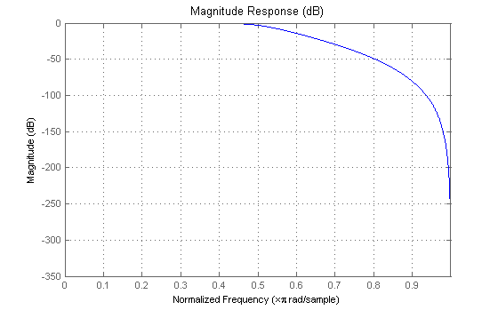
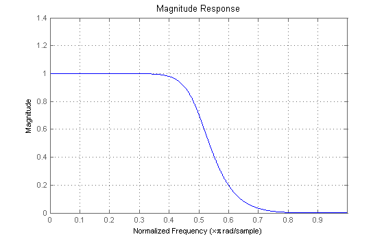
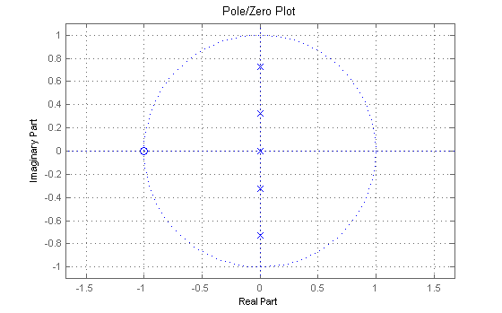
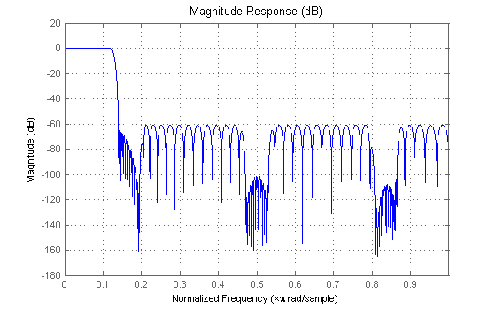
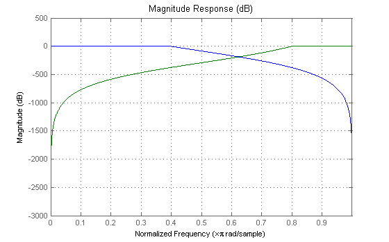
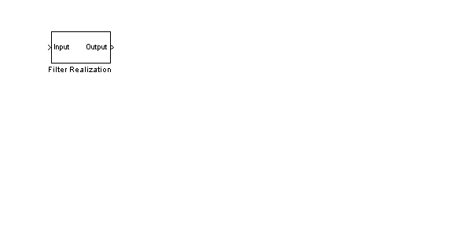

DFILT objects allow you to simulate and analyze discrete-time filters in a variety of structures including direct forms, second-order sections, lattice, and state-space.
Typing "helpwin dfilt" in the command window gives you a list of structures supported by the Signal Processing Toolbox as well as methods operating on dfilt objects. For further information about a particular structure or method, type "helpwin dfilt/or method" or "help dfilt/or method". For example:
help dfilt/df1
DF1 Direct-Form I.
Hd = DFILT.DF1(NUM, DEN) constructs a discrete-time direct-form I
filter object.
% EXAMPLE
[b,a] = butter(4,.5);
Hd = dfilt.df1(b,a)
See also DFILT/DF1SOS, DFILT/DF1T, DFILT/DF1TSOS, DFILT/DF2
DFILT/DF2SOS, DFILT/DF2T, DFILT/DF2TSOS.
help dfilt/freqz
FREQZ Discrete-time filter frequency response.
[H,W] = FREQZ(Hd,N) returns the N-point complex frequency response
vector H and the N-point frequency vector W in radians/sample of the
discrete-time filter Hd. The frequency response is evaluated at N
points equally spaced around the upper half of the unit circle. If N
isn't specified, it defaults to 8192.
FREQZ(Hd) with no output argument will launch FVTool in the Magnitude
and Phase Response.
[H,W] = FREQZ(Hd) returns a matrix H if Hd is a vector. Each column of
the matrix corresponds to each filter in the vector. If a row vector
of frequency points is specified, each row of the matrix corresponds to
each filter in the vector.
For additional parameters, see SIGNAL/FREQZ.
See also DFILT, SIGNAL/FREQZ, FVTOOL.
Reference page in Help browser
doc dfilt/freqz
To create a DFILT object, you need to select the structure to be used. For example, you can implement a linear-phase even-order FIR filter either as a direct-form FIR or as a symmetric direct-form FIR.
b = fir1(50,.4); % 50th-order linear-phase FIR filter h1 = dfilt.dffir(b); % Direct-form FIR implementation h2 = dfilt.dfsymfir(b); % Symmetric direct-form FIR implementation
IIR filters can be implemented in any of the four direct forms.
[b,a] = butter(5,.5); % 5th-order IIR filter hdf1 = dfilt.df1(b,a); % Direct-form I implementation hdf1t = dfilt.df1t(b,a); % Transposed direct-form I implementation hdf2 = dfilt.df2(b,a); % Direct-form II implementation hdf2t = dfilt.df2t(b,a); % Transposed direct-form II implementation
To create a copy of an object, use the copy method, for example hdf1_2 = copy(hdf1). Note that using the syntax hdf1_2 = hdf1 copies only the object handle and does not create a new object.
To manipulate the coefficients of a filter as a regular MATLAB vector, you can always get them from the object. To modify the coefficients of an existing DFILT object, you can set new ones.
Direct-form FIR structures only have numerator coefficients; these are also known as the filter weights.
h1
h1 =
FilterStructure: 'Direct-Form FIR'
Arithmetic: 'double'
Numerator: [1x51 double]
ResetBeforeFiltering: 'on'
States: [50x1 double]
NumSamplesProcessed: 0
b = get(h1,'Numerator'); % Assign the coefficients to vector b bnorm = b./max(b); % Manipulate the vector as usual set(h1,'Numerator',bnorm); % Set the modified coefficients
Direct-form IIR structures have numerator and denominator coefficients.
hdf1
hdf1 =
FilterStructure: 'Direct-Form I'
Arithmetic: 'double'
Numerator: [0.0528 0.2639 0.5279 0.5279 0.2639 0.0528]
Denominator: [1 -4.6491e-016 0.6334 -2.0438e-016 0.0557 -3.0935e-018]
ResetBeforeFiltering: 'on'
States: Numerator: [5x1 double]
Denominator:[5x1 double]
NumSamplesProcessed: 0
num = get(hdf1,'Numerator'); den = get(hdf1,'Denominator');
In addition to filtering, you can perform a wide range of analyses on DFILT objets. Most analysis functions that work with numerator and denominator vectors have been overloaded to work with DFILT objects.
[H,w] = freqz(hdf2t); % Frequency response [Gd,w] = grpdelay(hdf1); % Group-delay [hi,n] = impz(h2); % Impulse response
However, the analysis functions that can produce plots are much more powerful when working with DFILT objects since they use the Filter Visualization Tool (FVTool) to plot instead of a regular MATLAB figure.
hfvt = fvtool(hdf1t);
set(hfvt, 'Color', [1 1 1])
 In FVTool it is possible to set different sampling frequencies (by right-clicking anywhere on the axis), view magnitude, magnitude-squared, magnitude (dB) or zerophase responses (by right-clicking on the y-label), and switch between different analysis such as group delay, pole/zero plot, etc. (by using the toolbar or the 'Analysis' menu). Most of these actions can also be performed from FVTool's API (see Using FVTool's Application Program Interface (API) demo for more info). For example:
set(hfvt, 'MagnitudeDisplay', 'Magnitude');
set(hfvt, 'Analysis', 'polezero');
Other analysis functions are available exclusively for DFILT objects.
islinphase(h1) % Checks for linear-phase
ans =
1
isstable(hdf1) % Checks for stability
ans =
1
order(hdf2) % Returns filter order
ans =
5
The filtering operation is implemented for the structure selected. This is far more flexible than the usual FILTER(b,a,x) function which always implements transposed direct-form II.
To filter, we use the overloaded FILTER function with the DFILT object as its first input, then the signal to be filtered as its second input. By default, the states of the filter, stored in the 'States' property, are each initialized to zero. Furthermore the 'ResetBeforeFiltering' property is 'on' which means that the object is reset before the filter is run. This allows to filter the same sequence twice and produce the same output.
% To filter, we use the overloaded FILTER function with the DFILT object as % its first input, then the signal to be filtered as its second input. x = ones(5,1); y = filter(hdf1, x)
y =
0.0528
0.3167
0.8111
1.1718
1.1196
zf = hdf1.States % The object stores the final conditions in the 'States' property.
zf =
Numerator: [5x1 double]
Denominator: [5x1 double]
It is possible to connect two or more DFILT objects in either cascade (serial) or parallel configurations. Because the resulting connected objects are DFILT objects themselves, all of the DFILT object analysis functions are available for the the composite objects as well. Moreover, you can connect composite objects with other DFILT objects, resulting in arbitrary levels of interconnection.
Hcas = cascade(h1,hdf1); Hpar = parallel(Hcas,hdf2); y = filter(Hpar,randn(100,1));
For more instructive examples we turn to functions available in the Filter Design Toolbox. (The following code requires that you have the Filter Design Toolbox installed)
clear h; % Make sure this array is clear [b1,b2]=ifir(6,'low',[.12 .14],[.01 .001]); % Design two FIR filters h(1) = dfilt.dffir(b1); % Create a DFILT for first filter h(2) = dfilt.dffir(b2); % Create a DFILT for second filter hcas = cascade(h(:)); % Cascade both filters set(hfvt, 'Filter', hcas, 'Analysis', 'magnitude', 'MagnitudeDisplay', 'Magnitude (dB)');
When the Filter Design Toolbox is installed, you can perform frequency transformations on DFILT objects. Transformations are performed on a per-section basis for maximum numerical accuracy.
[z,p,k] = butter(30,0.4); % Lowpass Butterworth with cutoff at 0.4 [sos,g] = zp2sos(z,p,k); % Create SOS matrix hsos = dfilt.df1tsos(sos,g); % Construct SOS DFILT object hsos.ResetBeforeFiltering = 'off'; htrans = iirlp2hp(hsos,0.4,0.8); % Transformed filter is also SOS set(hfvt, 'Filter', [hsos, htrans]);
When the DSP Blockset is installed, you can generate Simulink models of DFILT objects, that maintain the exact filter structure.
realizemdl(hsos, 'Blockname', 'Filter Realization'); % Each 2nd-order section is implemented as transposed direct-form I
Single S-Function driven blocks can also be created using the BLOCK method. This method will use a "Digital Filter" block from the DSP Blockset and populate its coefficient fields with the coefficients from the filter object. This method only works for the filter structures supported by the "Digital Filter" block.
bdclose block(h(1), 'Blockname', 'Digital Filter');
Clean up the figures and models.
close(hfvt); bdclose
See also dfiltfilteringdemo.m